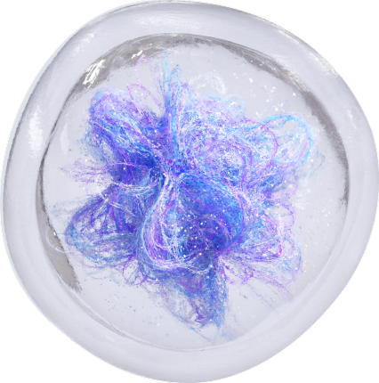
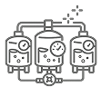
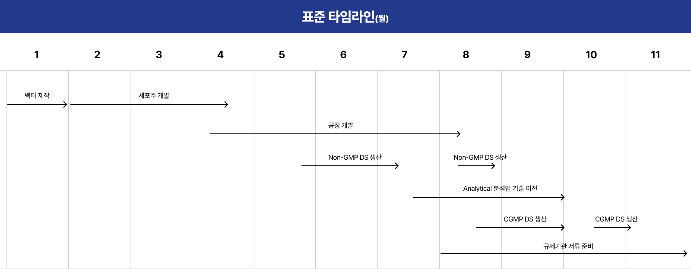
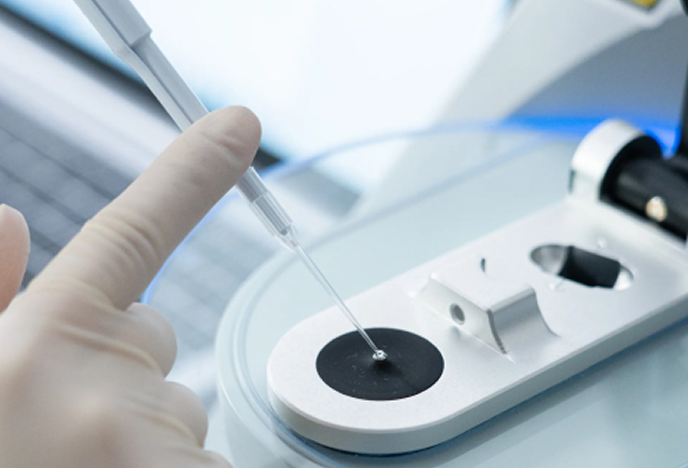
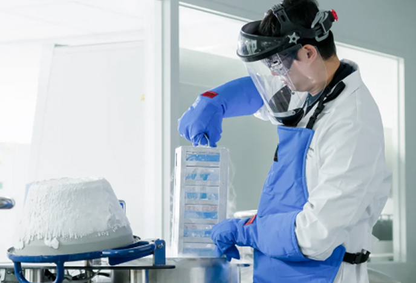
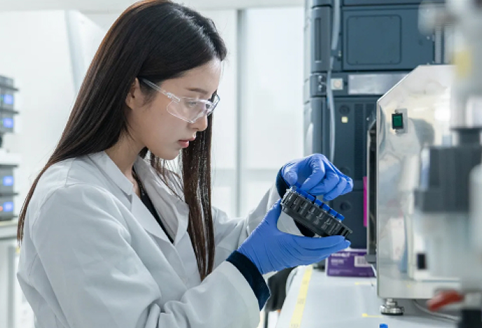
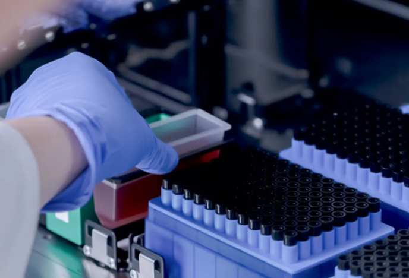

성공적인 신약 개발 과정을 함께하는 든든한 위탁개발 파트너.
삼성바이오로직스는 개발 전문성과 고객 중심 마인드로 최적화된 맞춤 서비스를 제공해 빠르고 효율적으로 신약 개발을
지원합니다.

About Samsung Organoids
초기 발굴부터 임상 단계까지 이어지는 연구 지원
Samsung Organoids는 연구 단계부터 임상 적용까지 신약 개발 전 과정에서 고객의 성공적인 연구 여정을 지원합니다.
Late Discovery
Cell Line Development
Process Development
Analytical Development

Non-GMP/CGMP Manufacturing
최적화된 타임라인 제공
개발부터 임상허가 신청(IND)까지 11개월 소요

초기 개발단계부터 IND까지 맞춤형 솔루션 제공
고객맞춤형 CMC 서비스
삼성바이오로직스는 고객사만의 물질 특성과 개발 전략을 고려하는 맞춤형 CMC 솔루션을 제공합니다.
물질에 대한 깊은 이해와 개발 노하우, 자체 보유 플랫폼을 활용해 개발 과정에서의 위험 요소를 최소화하고, 고객의약품 개발 전략에 맞춘 유연한 접근으로 최적화된 타임라인을 제시합니다.
Simplified IND
후보물질의 신속한 임상시험 승인을 위한
효율적인 타임라인의 서비스
Comprehensive IND
개발 초기 단계에서부터 IND 승인, 임상,
BLA까지 고려한 다면적 접근방식의 서비스
Enhanced CMC
발현량(Titer) 등 후보물질의 주요 특성을 개선해 생산성을 높이는 서비스
초기 개발단계부터 IND까지 맞춤형 솔루션 제공
Services
01 후기 발굴 서비스
Accelerated Discovery
with Advanced Platforms
삼성바이오로직스는 차세대 이중항체 플랫폼 S-DUAL®, 개발 가능성 평가 플랫폼
DEVELOPICK®, 후보물질 임시 발현 플랫폼 S-CHOsient™를 자체 개발했으며, 물질에
대한 인사이트를 바탕으로 후보물질의 안전하고 신속한 시장 진출을 지원하고 있습니다.

02 세포주 개발 서비스
Accelerated Cell Line Development for IND Submission
세포주는 바이오의약품의 품질, 안전성, 생산성에 영향을 미치므로, 성공적인 임상시험과 규제
승인 획득을 위한 최적의 세포주 개발은 중요합니다. 삼성바이오로직스는 맞춤 서비스로 타임라인을
단축하고, 개발 전략에 가장 적합한 결과를 달성하도록 지원합니다.

03 공정 개발
Phase-appropriate Process Development with QbD
삼성바이오로직스의 공정 개발 서비스는 단계별로 적합한 설계 기반 품질 고도화(Quality by Design)
접근 방식에 따라 진행됩니다. 실험 계획법(Design of Experiment)에 기반한
구조화된 공정 개발과 인하우스 분석 역량을 활용해 전 과정에 걸쳐 최상의 결과를 보장합니다.

04 분석법 개발
End-to-End Analytical Development for Biologics
삼성바이오로직스는 단일클론항체부터 복합 물질까지 포괄하는 다양한 인하우스 분석 서비스를
제공합니다. 새로운 치료제 형태에 따른 맞춤형 분석 전략을 제시하며 고객사의 성공적인 개발
과정을 함께합니다.

05 Non-GMP / CGMP 생산
Flexible Clinical Trial
Manufacturing Services
고객의 개발 전략에 맞춘 유연한 생산 서비스를 제공합니다. 단일 사이트 기준 세계 최대 규모의
생산 시설과 우수한 운영 효율성, 분석 및 규제 전문성을 바탕으로 IND 이후까지 고려한 통합
솔루션을 지원합니다.